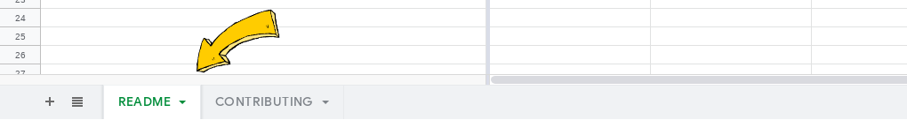

Desenvolvedores, ao tentarem contribuir com projetos de software livre, costumam enfrentar um conjunto de barreiras que dificultam o processo de entrada em tais projetos. Estas barreiras, por sua vez, podem levar tais desenvolvedores a desistência de contribuir com software livre, afetando diretamente a continuidade de projetos associados a este contexto.
Entre as dificuldades enfrentadas, encontram-se barreiras que poderiam ser subvertidas através de uma melhor documentação destinada a novos contribuidores. No entanto, ainda não foram constatadas evidências o suficiente quanto a qualidade das documentações destinadas a novatos em software livre, tampouco foram propostos mecanismos que identifiquem o quanto tais documentações atendem as necessidades dos novatos. Note que o termo novato, neste contexto, refere-se a qualquer desenvolvedor que almeja contribuir com um projeto de software livre.
Neste experimento, será apresentado a você um conjunto contendo sete categorias já reconhecidas por serem importantes para novatos em software livre, e o seu objetivo é identificar tais categorias em arquivos de documentação para um conjunto de projetos. Siga os passos a seguir se você concorda em participar deste experimento.
Antes de identificar quaisquer categorias em arquivos de documentação, é importante compreender detalhadamente as categorias que gostaríamos de identificar. Na lista a seguir, nós descrevemos as sete categorias propostas para este experimento. Leia cada uma delas com muita atenção, pois compreende-las corretamente é essencial para o sucesso da atividade:
- CF – Fluxo de contribuição: É comum que novatos se sintam perdidos ou desmotivados ao contribuir com projetos de software livre justamente por não entenderem quais passos devem seguir durante o processo de contribuição. Nesta categoria, gostaríamos de identificar trechos na documentação dos projetos que expliquem quais passos os novatos devem seguir para terem uma submissão aceita ao fim do processo de contribuição.
- CT – Escolher uma tarefa: Muitos desenvolvedores se vêem interessados em contribuir com projetos de software livre, entretanto, muitos deles não sabem ao certo por quais tarefas começar. Tarefas, neste contexto, estão associadas a quaisquer atividades que possam ser realizadas no projeto, como a resolução de um bug ou a proposta de uma melhoria para o software desenvolvido. Nesta categoria, você deverá identificar sentenças na documentação dos projetos que descrevam quais tarefas os novatos podem escolher para contribuir com um projeto de software livre.
- FM – Encontrar um mentor: Em muitos projetos de software livre, existem membros na comunidade que estão dispostos a guiar novatos durante o processo de contribuição. Estes membros da comunidade são denominados os mentores do projeto. Para esta categoria, você deverá identificar trechos na documentação dos projetos que descrevam como novatos podem encontrar tais mentores no projeto.
- TC – Conversar com a comunidade: Além de um mentor, também é importante que novatos saibam onde e como entrar em contato com demais membros da comunidade do projeto. Por esta razão, nós gostaríamos de identificar nesta categoria quaisquer informações sobre como novatos podem interagir com os membros da comunidade, incluindo links para canais de comunicação (e.g. IRC, Slack), tutoriais de inscrição em listas de email, boas práticas durante a comunicação com os membros da comunidade, entre outros.
- BW – Preparar o ambiente de desenvolvimento: Estudos mostram que novatos muitas vezes não encontram informações o suficiente sobre como preparar o ambiente de trabalho localmente para desenvolver um projeto de software livre (informações, por exemplo, sobre como instalar, compilar, executar e manipular as dependências do software). Nós gostaríamos de identificar para esta categoria, trechos de documentação que especifiquem os passos necessários para preparar localmente o software a ser desenvolvido.
- DC – Lidar com código: Muitos projetos tem seus próprios padrões de escrita e organização de código. Para esta categoria, nós gostaríamos de identificar sentenças que descrevam como o código deve ser escrito, organizado e documentado dentro do projeto de software livre a ser desenvolvido.
- SC – Submeter mudanças: O último passo ao contribuir com um projeto de software livre é, essencialmente, a submissão das mudanças feitas no código. Nesta categoria, nós gostaríamos de identificar informações sobre como os novatos devem preparar e submeter um pacote de mudanças ao projeto.
Agora que você já compreendeu as categorias, o segundo passo é identifica-las em arquivos de documentação. Para esta tarefa, nós já preparamos um conjunto de planilhas contendo arquivos de documentação extraídos de projetos de software livre, clique aqui para ter acesso. Você irá selecionar cinco planilhas deste conjunto, criar sua própria cópia das planilhas que você selecionar, e irá realizar a identificação das categorias para as cinco planilhas escolhidas por você. Note que as planilhas estão divididas em duas páginas, README e CONTRIBUTING, por favor não se esqueça de fazer a identificação das categorias para ambas as páginas. Um breve tutorial sobre como realizar a identificação das categorias para as planilhas escolhidas é definido a seguir:
- Para cada planilha selecionada, leia atentamente os parágrafos na primeira coluna.
- Ao identificar uma ou mais categorias em um parágrafo, marque uma letra X nas colunas das respectivas categorias que você identificou, considerando a respectiva linha onde se encontra o parágrafo analisado.
- Repita os dois primeiros passos para todas as planilhas analisadas, e não se esqueça de fazer a análise para ambas as páginas contidas em cada planilha. 
- Faça a submissão das planilhas analisadas por você seguindo as instruções descritas na próxima seção.
Tutorial de Identificação


- Use a sua própria perspectiva: Não existe uma maneira certa ou errada de identificar tais categorias. Se você compreendeu tudo o que lhe foi dito nas últimas seções, sinta-se à vontade para interpretar os parágrafos usando sua própria perspectiva, e aplique quantas categorias julgar necessário para cada um deles.
- Certos parágrafos podem não conter informações relevantes: É esperado que alguns parágrafos não contenham informações o suficiente que identifiquem tais categorias propostas. Leia cada parágrafo atentamente, e sinta-se à vontade para pular os "irrelevantes".
- Restrinja sua análise às planilhas: Durante a análise, não é necessário abrir nenhum link, se inscrever em nenhuma lista de email ou realizar qualquer atividade parecida. Use para análise apenas as informações que foram dadas a você nas planilhas escolhidas.
Este é o passo final do experimento. Salve as cinco planilhas que você analisou em uma pasta, comprima a pasta e envie ela anexada a um email para fronchetti@usp.br. Caso você tenha utilizado o Google Drive para realizar a análise, você pode submeter apenas os links das planilhas por email (Não se esqueça de permitir a visualização das planilhas para os links enviados). Sinta-se à vontade para compartilhar também a sua opinião durante o email. Críticas, sugestões e observações são sempre bem-vindas.
A sua participação contribuirá na construção de comunidades de software livre mais sólidas e receptivas a novos contribuidores. Informações pessoais que identifiquem individualmente quaisquer participantes deste experimento não serão coletadas, mantidas ou divulgadas. Informe-nos por email caso queira receber atualizações sobre os resultados deste experimento.
Agradecemos a sua participação,
Luiz Felipe Fronchetti DiasPesquisador Responsável pelo Experimento